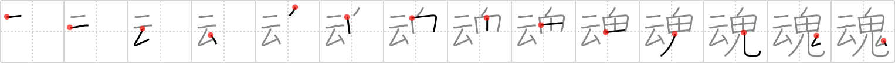

魂
← →
soul

Reading:
On-Yomi: コン — Kun-Yomi: たましい、たま
Heisig story:
Rising cloud of . . . ghosts.
Koohii stories:
1) [mspertus] 13-3-2008(141): When we die, our soul rises up in a ghostlike rising cloud of mist up to heaven (we hope) (Adapted from darg_sama,28-10-2005).
2) [romanrozhok] 30-3-2008(133): When you die, your SOUL either goes to the RISING CLOUDS (heaven) or to the ONI (hell, the devil).
3) [darg_sama] 28-10-2005(30): There exists a soul within us all. When we die, our ghost rises up like a rising cloud out of our bodies.
4) [WithLoveFromExIA] 20-6-2009(21): After death, your soul may go up like a rising cloud, or stay as a ghost.
5) [joxn_costello] 9-2-2009(19): Just as a sidenote, 魂＝だましい , from Katamari Damacy ( 塊魂 ).